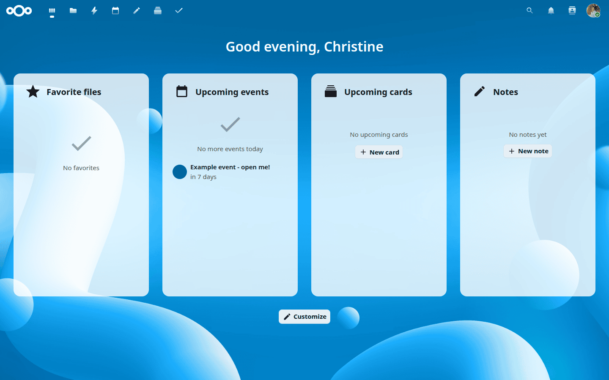
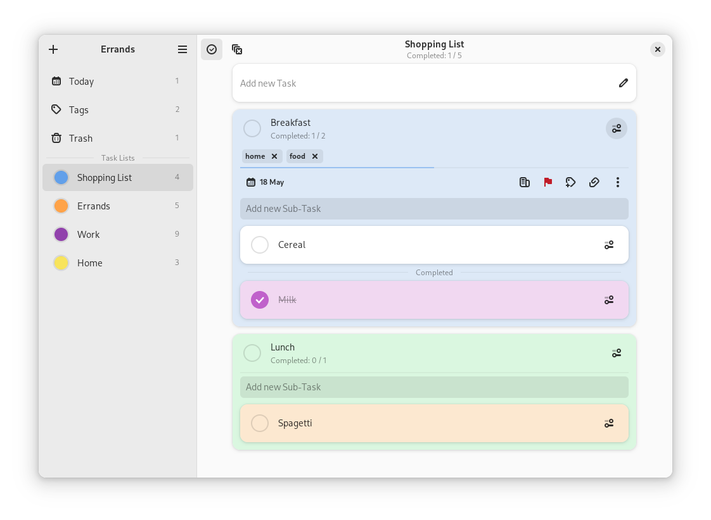

首頁 · H-01
Nextcloud Dashboard · 原作完整桌面畫面
H-01 v1 · 原圖逐 byte 保留 · NC 33 截圖 · 未入選

Nextcloud Documentation / Nextcloud contributors；截圖提交者 Anna Larch（miaulalala）。CC BY 3.0。原圖未裁切、換色或翻譯。
首頁 · H-03
Tilde · 未修改的原生完整首頁
固定提交 1961fded · 未標註發行版號 · 未入選 · 與未公開的 Homer H-02 分開編號
以原作完整 HTML 展示中央時鐘及字母導覽，文字、配置、字體與程式均未修改。本包沒有已保存的原作截圖，因此不製造替代圖片；請由下方連結開啟原生整頁。索引本身不嵌入或執行它。
原生頁不是靜態圖片：輸入搜尋可能請求 DuckDuckGo 建議，提交或按下目的地會開啟外部網站。本次只供查看原始靜止首頁，不輸入私人資料或啟用外部服務。時鐘及明暗跟隨原作的本機時間與瀏覽器設定。
xvvvyz/tilde；固定提交作者 cade。程式採 Unlicense；字體 Copyright 2020 The Space Grotesk Project Authors，採 SIL OFL 1.1。九份原檔與完整 notices 保留，CNAME 僅為原始文字，未套用到主機。已有獨立靜止桌面檢視；本版新入口、搬移後靜止顯示及瀏覽器返回亦已核對；不表示作者背書。
助手對話 · PC01
assistant-ui · Weather in Tokyo 原作示例
PC01 v1.0.1 · 下圖是未修改的原作；另保留已核對的 HTML/CSS 靜態重建 · 未入選
assistant-ui / AgentbaseAI Inc.，Copyright (c) 2026。MIT。重建版採系統字體及重畫圖示，不是逐像素一致，亦不會真正發送訊息。
照顧記錄 · C-01
Baby Buddy Timeline · 原作桌面視窗
C-01 v1.0.0 · 原圖逐 byte 保留 · 2022-01-30 文件截圖，App 版本未標明 · 未入選
Baby Buddy's Contributors；圖片提交者 Christopher C. Wells（cdubz）。BSD-2-Clause。這是完整原始視窗，不是整段可捲動時間線，也不代表 2026 年現行介面。
設定 · S-01
shadcn/ui · Settings / Appearance 原作畫面
S-01 v1.0.0 · 原圖逐 byte 保留 · 2023-05-19 文件示例，非 2026 最新介面聲明 · 未入選
shadcn/ui，Copyright (c) 2023 shadcn。MIT。完整保留 Appearance 原始畫面，沒有重建其他設定分頁或文件網站外框；圖中控制項不可操作。
設定 · S-02
TokenHub · System Settings 原作桌面截圖
固定提交 898d7a5c · 圖中 v0.2.0／同版 package 0.1.0 · 非已核發行建置 · 未入選
Copyright 2026 TokenHub contributors。Apache-2.0；Lucide 1.17.0 的 ISC／Feather MIT 及 Next 16.2.9 MIT notices 一併保留。3456 × 1882 原圖未改畫、翻譯或裁切，僅等比例顯示。
只確認 General Settings 圖上已顯示區域，不推定圖外內容或其他兩個頁籤。截圖及同版頁面標示 v0.2.0，但 package 是 0.1.0，實際拍攝時刻及發行 build 未核。倉庫來源授權不等於獨立商標授權或全面權利清查。原品牌僅識別來源，不是育伴港身份或作者背書。
這是不可操作的來源圖片，未改動 S-01 或選擇。來源頁保留作者封裝時的未驗 browser 聲明；其後獨立本地桌面顯示及說明頁導航已核，本版入口、搬移後顯示及瀏覽器返回亦已核對。未啟動原應用，未部署網站。
記憶與參考 · MR-01
Trilium Notes · Trilium Demo 原作桌面視窗
MR-01 v1.0.0 · 原圖逐 byte 保留 · 圖片提交於 2026-01-03，App 版本未標明 · 未入選
Copyright 2017–2025 zadam, Elian Doran, and other contributors。AGPL-3.0-or-later。圖片提交者 Adorian Doran（adoriandoran）。透明留白、陰影及原視窗完整保留；不是整篇可捲動內容，沒有真搜尋、編輯或筆記樹操作。
此處只陳列未修改的官方文件圖片及授權，沒有引入或運行 Trilium 程式。原圖與文件維持原授權；不暗示背書，不另限制原授權權利，也不替日後真正前端作授權決定。圖片專用許可書並未另行取得。
待辦 · TK02
Super Productivity · Today 淺色手機原作畫面
TK02 v1.0.0 · 原圖逐 byte 保留 · 路徑最後提交於 2025-10-14，並非拍攝日期；App 版本未標明 · 未入選
Copyright (c) 2018 Johannes Millan。MIT。完整保留原手機畫面；路徑提交者 Licaon_Kter 不等同截圖作者。只有原圖展示，沒有真任務操作，不推導桌面配置、其他頁面、彈窗或手勢。
採用官方倉庫隨附發行圖片的 MIT 授權依據，並非另行取得圖片作者特別許可；不表示作者背書或取得商標權。未引入原作程式；TK01、原版及既有選擇均保留。
待辦 · TK03
Errands · Shopping List 原作完整桌面視窗
46.2.9 隨附原圖 · 原圖最後修改於 46.2 原始碼提交，實際截圖執行版未知 · 未入選

Errands / Vlad Krupinskii，Copyright (c) 2023。MIT。原圖、透明邊界及陰影逐 byte 保留，未裁切、重繪或翻譯。這是靜態圖片，不執行原應用。
原圖最後修改：2024-05-18，b6f9fd33；不能標成「46.2.9 執行畫面」。採用官方倉庫隨附文件的 MIT 授權依據，並非獨立圖片特許或商標／介面複製保證；不表示作者背書。TK02 及既有選擇保留。